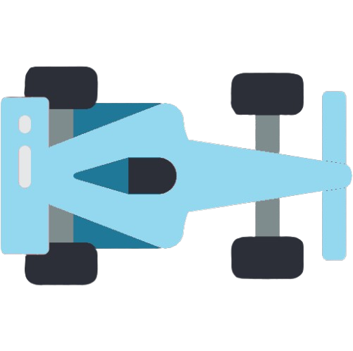

NEAT (NeuroEvolution of Augmenting Topologies)#

In this lesson, we’ll explore NEAT (NeuroEvolution of Augmenting Topologies), an evolutionary algorithm for generating artificial neural networks. Unlike traditional reinforcement learning methods that update a single network, NEAT evolves a population of networks over time, combining the principles of genetic algorithms with neural network optimization.
Overview of NEAT#
NEAT is a genetic algorithm that evolves both the topology and the weights of neural networks. It starts with simple networks and gradually adds complexity, allowing it to find a balance between network performance and complexity. This approach can be particularly effective for reinforcement learning tasks where the optimal network structure is not known in advance.
Key features of NEAT include:
Direct encoding of network topologies
Speciation to protect innovation
Historical markings to enable crossover between different topologies
The NEAT Process#
The NEAT algorithm follows these main steps:
Initialize Population: Create a population of simple neural networks with random weights.
Evaluate Fitness: Run each network through the environment and calculate its fitness based on performance.
Speciation: Divide the population into species based on topological similarities.
Selection: Select the fittest individuals from each species to reproduce.
Reproduction: Create offspring through mutation and crossover:
Mutation: Add/remove nodes or connections, or modify weights
Crossover: Combine genes from two parent networks
Replace: Replace the old population with the new offspring.
Repeat: Go back to step 2 and continue for many generations.
Understanding Fitness in NEAT#
In the context of NEAT, fitness is a measure of how well a particular neural network (genome) performs in the given environment. It’s the criterion used to determine which individuals in the population are more likely to survive and reproduce. In our car racing scenario, we will be using the same approach to define fitness as we used to define rewards in previous lessons, since they essentially serve the same purpose in this context.
Key Concepts in NEAT#
Gene Encoding NEAT uses a direct encoding scheme where each gene represents either a node or a connection in the neural network. This allows for easy manipulation of the network structure through genetic operations.
Historical Markings Each gene is assigned a unique historical marking when it’s created. These markings are used to align genes during crossover, allowing NEAT to perform meaningful crossover between networks with different topologies.
Speciation To protect innovation, NEAT divides the population into species based on topological similarities. This prevents newly evolved structures from being eliminated before they have a chance to optimize their weights.
Complexification NEAT starts with minimal networks and gradually adds complexity through mutation. This allows it to find solutions in simple spaces before exploring more complex ones. Advantages of NEAT in Reinforcement Learning
Automatic Structure Optimization: NEAT can find both the optimal network structure and weights, which is particularly useful when the best network architecture for a task is unknown. Diversity Preservation: Through speciation, NEAT maintains a diverse population, which can help in exploring different strategies in the reinforcement learning environment. Scalability: NEAT can scale from simple to complex problems as it adds complexity over time. No Backpropagation: As an evolutionary method, NEAT doesn’t require backpropagation, which can be advantageous in certain reinforcement learning scenarios.
Using the NEAT-Python Library#
For our implementation, we’ll be using the NEAT-Python library, which provides a powerful and flexible implementation of the NEAT algorithm. You can find the documentation and installation instructions at https://neat-python.readthedocs.io/en/latest/.
class NeatRace():
def training_race(self, cars, genomes):
counter = 0
running = True
while running:
# For Each Car Get The Acton It Takes
for car in cars:
car.action_train()
# Check If Car Is Still Alive
# Increase Fitness If Yes And Break Loop If Not
still_alive = 0
for i, car in enumerate(cars):
if car.is_alive():
still_alive += 1
car.update(self.game_map)
genomes[i][1].fitness += car.get_reward()
if still_alive == 0:
break
counter += 1
if counter == 30 * 40: # Stop After About 20 Seconds
break